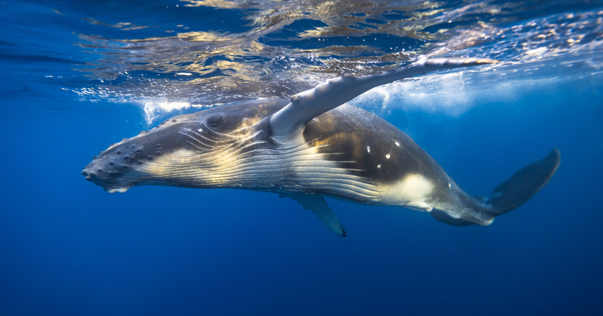

Metode de hrănire

Balena cu cocoașă
Se hrănește cu krill și pești mici. Folosește tehnica „bulgăre de balene”, în care creează cercuri de bule pentru a aduna hrana și apoi o înghite dintr-o dată. Este cunoscută și pentru săriturile spectaculoase și bătăile cu coada, folosite și pentru comunicare.

Balena albastră
Se hrănește în principal cu krill. Filtrează hrana prin baleenele sale după ce înghite cantități uriașe de apă. Este mai puțin spectaculoasă la suprafață, dar poate înota foarte repede pentru a ajunge la zone bogate în hrană.

Beluga
Mănâncă pești, crustacee și calmari. Folosește ecolocația pentru a găsi prada în ape tulburi sau printre ghețuri. Este foarte socială și comunică cu alte beluge printr-o gamă largă de sunete.

Cașalotul
Vânează calmari uriași și pești de adâncime, scufundându-se până la peste 1000 de metri. Folosește ecolocația pentru a localiza prada în întunericul adâncurilor.

Orca
Este prădător de vârf și se hrănește cu pești, foci, pinguini și alte mamifere marine. Vânează în grupuri, cu tactici de cooperare extrem de eficiente. Fiecare pod are propriile metode de vânătoare, transmise între generații.

Balena minke & Fin whale
Se hrănesc cu pești și krill, în funcție de sezon și de locul în care se află. Sunt rapide și agile, folosindu-și înotul pentru a prinde hrana. Balena comună (Fin whale) este a doua ca mărime din lume.